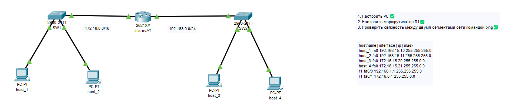
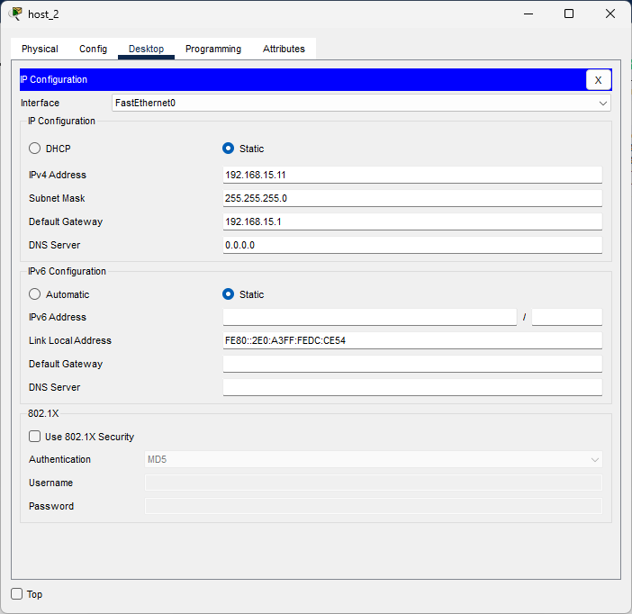
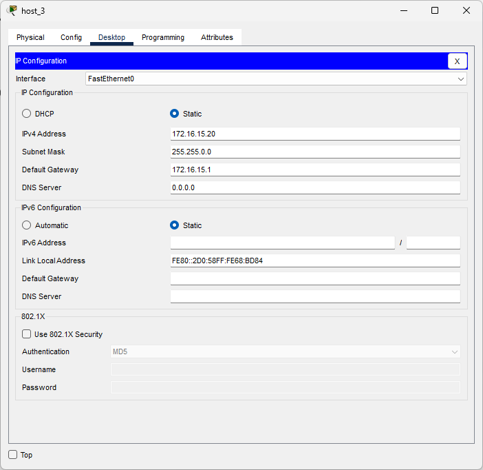
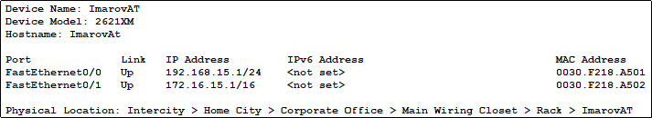
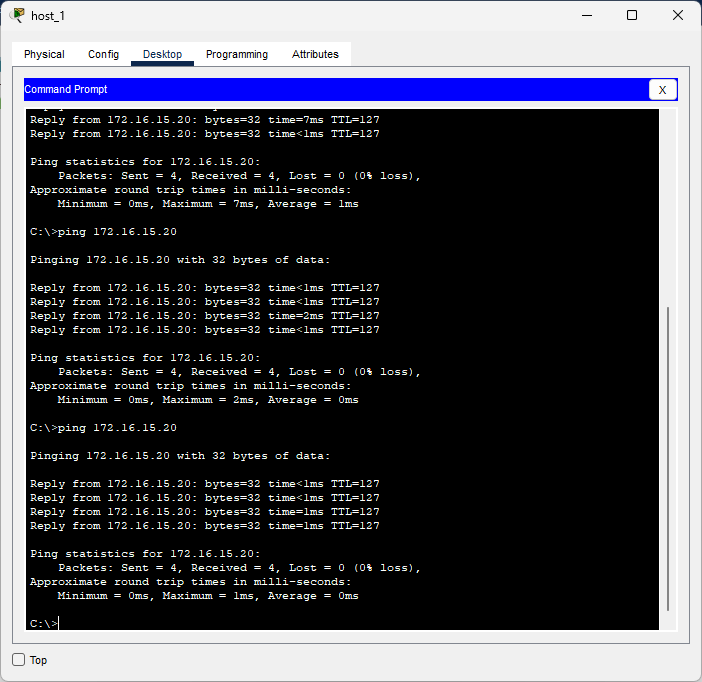
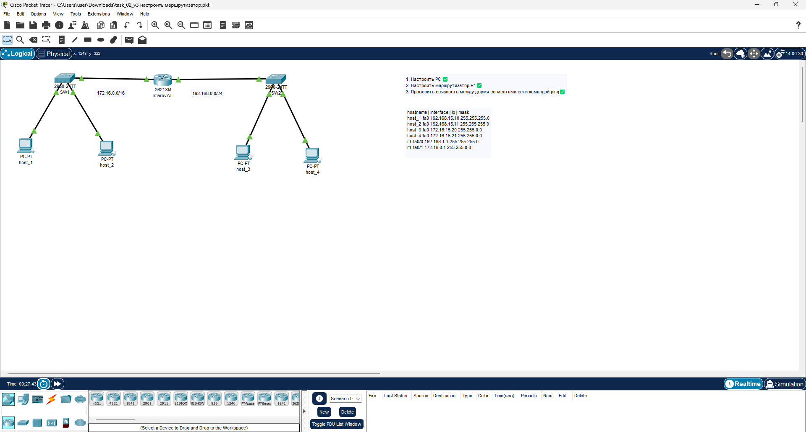

Образовательная организация: IThub
Работа: Лабораторная работа №1 — Построение и настройка локальной сети
Выполнил: Имаров Абдуллазим
Группа: 2ЭИТ
Дата: 17.10.2025
1. Цель работы
Цель данной лабораторной работы — изучить основы построения локальной сети, освоить настройку сетевых устройств, маршрутизацию и проверку связности между узлами в среде Cisco Packet Tracer.
2. Ход выполнения работы
- Создана топология сети, включающая маршрутизатор, коммутаторы и конечные устройства (ПК);
- Изменён hostname роутера на ImarovAT и подписаны все устройства на топологии;
- Назначены IP-адреса с третьим октетом 15 в соответствии с порядковым номером в списке группы;
- Настроена маршрутизация между подсетями;
- Проверена связность с помощью команды
ping.
3. Отчеты
Рис. 1 — Полная топология сети в Cisco Packet Tracer
Рис. 2 — Настройки IP-адресов для рабочих станций
 Рис. 3 — Данные роутера
Рис. 4 — Проверка связи между двумя подсетями с помощью команды ping
4. Изображение работающей топологии
Рис. 5 — Все устройства находятся в состоянии up/up, обмен пакетами проходит успешно
Скачать материалы
5. Выводы
В результате выполнения лабораторной работы была создана и настроена локальная сеть. Все устройства успешно подключены, маршрутизация работает корректно, а связность между подсетями подтверждена. Полученные навыки можно применять для проектирования и администрирования реальных сетей.